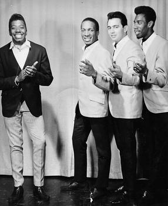

Bobby Taylor & the Vancouvers
Bobby Taylor & the Vancouvers were a Canadian soul band from Vancouver, British Columbia, Canada. The group recorded for the Gordy Records division of Motown Records in 1968, where they had a top 30 hit single, "Does Your Mama Know About Me". As a producer and solo artist, Bobby Taylor contributed to several other soul recordings, both inside and outside of Motown. Taylor is most notable for discovering and mentoring the Jackson 5. Tommy Chong was a member of Bobby Taylor & the Vancouvers before he became famous as a comedian.
Complete Discography & Tracklists (1)